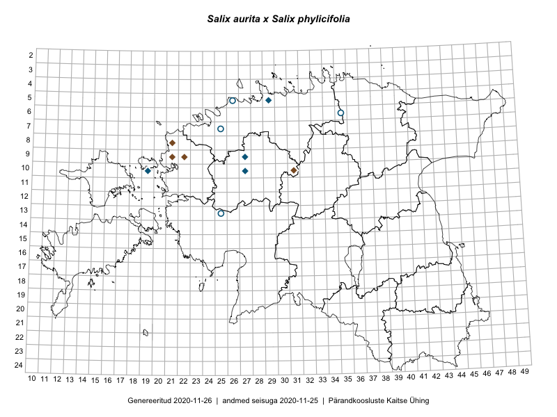

Salix aurita × Salix phylicifolia — kõrvpaju × kahevärvine paju
Salicaceae :: Salix aurita × Salix phylicifolia (13)

Kaart põhineb 17 kirjel:
herbaareksemplare 13
PKÜ kirjeid1 4
Taime kaasaegsed ja ajaloolised leiukohad asuvad 12 ruudus.
Tingmärgid ja leidudega ruutude arvud periooditi uues (u) ja 2005 andmestikus (v)
| █ | vahemik | u2 | v3 |
|---|---|---|---|
| █ | 2006–2020 | 0 | – |
| ◆/◇ | 1971–2005 | 8 | 0 |
| ○ | 1921–1970 | 4 | 0 |
| + | kuni 1920 | 0 | 0 |
| × | hävinud | – | 0 |
| ? | kaheldav | – | 0 |
| Ruut | Leidja(d) | Leiuaeg | Kirje |
|---|---|---|---|
| 10-31 | Urmas Laansoo, Eerik Leibak | 2001-09-03 | PKÜ: 7414 |
| 09-22 | Tõnu Ploompuu, Hannu Ploompuu, Mats Ploompuu | 2000-08-19 | PKÜ: 2541 |
| 05-29 | Heinrich Aasamaa | 2000-06-19 | TAM0130789: Salix aurita × Salix phylicifolia |
| 08-21;09-21 | Anneli Tamm, Bert Holm | 2000-06-05 | PKÜ: 6975 |
| 09-21 | Anneli Tamm, Bert Holm | 2000-06-03 | PKÜ: 2378 |
| 09-27 | Heinrich Aasamaa | 1999-10-07 | TAM0136329: Salix aurita × Salix phylicifolia |
| 05-29 | Heinrich Aasamaa | 1996-07-07 | TAM0130785: Salix aurita × Salix phylicifolia |
| 05-29 | Heinrich Aasamaa | 1996-07-07 | TAM0130786: Salix aurita × Salix phylicifolia |
| 05-29 | Heinrich Aasamaa | 1996-07-07 | TAM0130787: Salix aurita × Salix phylicifolia |
| 05-29 | Heinrich Aasamaa | 1996-07-07 | TAM0130788: Salix aurita × Salix phylicifolia |
| 10-19 | Toomas Kukk | 1992-07-16 | TAA0098022: Salix aurita × Salix phylicifolia |
| 10-27 | Linda Viljasoo | 1979-06-28 | TAA0098021: Salix aurita × Salix phylicifolia |
| 05-26 | Silvia Talts | 1960-08-13 | TAA0098020: Salix aurita × Salix phylicifolia |
| 07-25 | H. Rebassoo | 1958-08-28 | TAA0098017: Salix aurita × Salix phylicifolia |
| 06-35 | Taisi Belajeva, H. Karu | 1958-08-04 | TAA0098019: Salix aurita × Salix phylicifolia |
| 07-25 | H. Rebassoo | 1958-05-25 | TAA0098018: Salix aurita × Salix phylicifolia |
| 13-25 | M. Kask | 1952 | TAA0098016: Salix aurita × Salix phylicifolia |
Pärandkoosluste Kaitse Ühingu (PKÜ) andmebaas sisaldab inventeeritud koosluste kirjeldusi ja liigiloendeid. Kõige enam on andmeid niidutaimede kohta.↩︎
Ruutude arv uue atlase andmekogu järgi. Muuhulgas arvestab vanemat herbaariumi, 2005. aasta atlase välitöölehtedelt uuesti digitaliseeritud andmeid jne. Uue atlase andmekogust pärinevad andmed on kaardile kantud siniste sümbolitega.↩︎
Ruutude arv 2005. aasta atlase (Kukk, T., Kull, T., Eesti taimede levikuatlas. Eesti Maaülikool, Põllumajandus- ja Keskkonnainstituut, Tartu, 2005) järgi. Andmeallikana on kasutatud levik.exe programmi, kus igas ruudus on registreeritud vaid uusim leid. Seetõttu on vanemate perioodide kohta andmed puudulikud. Kasutatud levik.exe andmestikus leidub mõningaid kõrvalekaldeid atlase trükis ilmunud versioonist, sagedamini tarnade ja käpaliste seas. Lisaks leidub selles andmestikus valik liike (peamiselt väheste leidudega tulnuktaimed), mille kaarte trükis ei avaldatud. Vana atlase andmed ruutudest, milles ei ole uue atlase andmekogus leide enne 2006. aastat, on kaardil esitatud punaste sümbolitega. Vana atlase andmetel hävinud ja kaheldavaid leiukohti pole hilisemate (taas)leidude põhjal korrigeeritud.↩︎